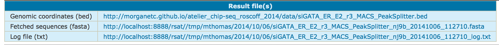
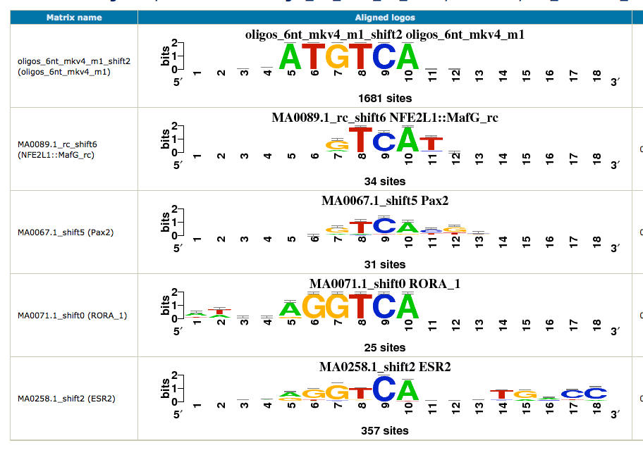
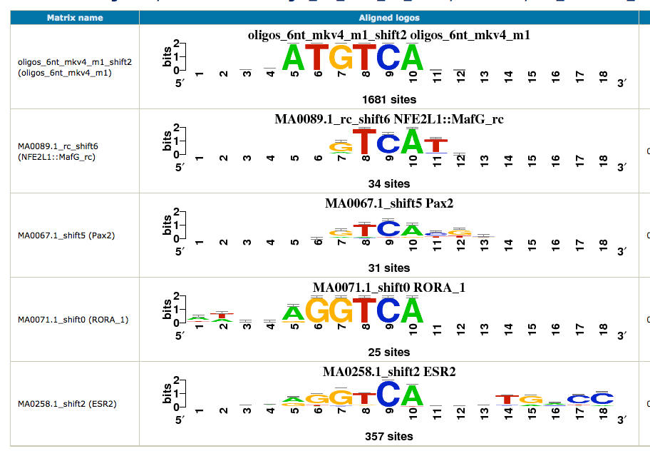

What is the result of this fetch-sequences tool ?

The program returns 3 links to files : the input BED file (coordinates), the corresponding sequences (FASTA file), and a log text file that contain information on the execution of the program.
The program returns 3 links to files : the input BED file (coordinates), the corresponding sequences (FASTA file), and a log text file that contain information on the execution of the program.
 
